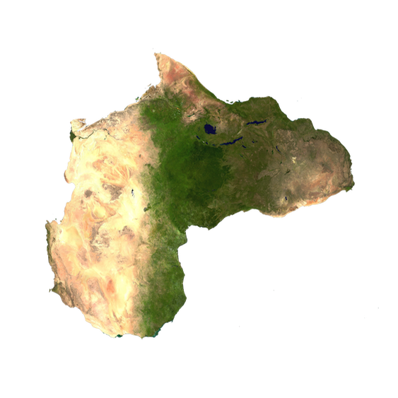
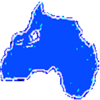

∞ ⋈ ∞ ∞ ⋈ ∞ ∞ ⋈ ∞
Africahead Logo
The Africahead logo consists of the word Africahead and the map image of Africa. The image can be facing left or facing right. It can make ones think of a well schooled dressage horse when the head looks like the usual image on a map. When the head picks up it looks like an Africahead image on a globe. When the head is facing left it is a mirror image seen sometimes on television when the globe is pictured hollow, looking from inside the globe to the outside. Many variations are possible. Sometimes the head on the logo is moving up and down as if disturbed. Listed below are links to some of the variations, which have formed since 2002.
Africahead Rivers
Topographic Africahead
CIA Language Map of Africa
Ethnicity Map
Screen print from https://worldmap.harvard.edu/maps/532
on 6 March 2019.
"This dataset was created as part of the AfricaMap project by scanning and georeferencing
the "Peoples of Africa" atlas by Marc Felix. Peoples of Africa An ethnolinguistic atlas
of Africa Edited by Marc Leo Felix. Cartographery by Charles Meur Limited edition in
Spanish, 200
copies by Ediciones Oba-Barcelona. English edition, 800 copies by Marc Leo Felix
- Tribal Arts s.p.r.l.-Bruxelles 50 color plates, 11 in black and white, A3
Format ISBN 2-930169-04-4 License: Attribution-NonCommercial-ShareAlike 3.0
Unported (CC BY-NC-SA 3.0) http://creativecommons.org/licenses/by-nc-sa/3.0/."
Weather Map
Downloaded from pexels.com. There is a correlation between
the spread of ethnicities and the weather.

Download
Link sent to Coinpaprika.com

Download
Used at Twitter and Medium
Used at www.sastrust.org (website cancelled)
28x28png submitted to etherscan.io
https://github.com/ethereum-lists 128x128 png.
28x28png submitted to etherscan.io
Moving images of Africahead.
Used at Google accounts.
Earliest digital forms of the Africahead logo used as email signatures. The non-English words are translations of "Africahead" to other South African languages.